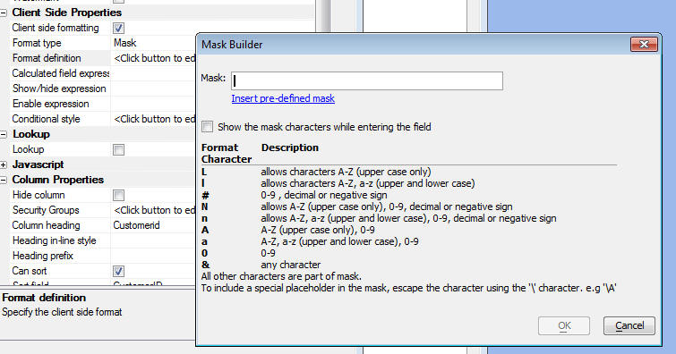

Client-Side Properties
You can now define several 'client-side' properties for a Grid. These are:
Calculated Fields
Client-side calculated fields are computed using Javascript. The calculation is performed as soon as any of the operands in the calculated expression are changed.
Warning: If you have defined a formatting expression for a field that also has a client-side calculation, the formatting expression will be overwritten by the result of the client-side calculation. You must therefore put the the formatting logic into your client-side calculated expression.
Show/hide Fields
Any field, or Container can by dynamically shown/hidden. If you want to show/hide multiple fields at once, wrap the fields in a Container control (Form layout mode) and set the show/hide expression for the container.
Enable Expression
You can enable/disable an input control.
Conditional Styles
You can define conditional styles. The conditions are evaluated in the Browser using Javascript. This is an extremely powerful feature as it allows you to dynamically style controls without having to make Ajax callbacks. For example, if a user types in a value into a Quantity field that is too large, you can immediately display the field in red. Contrast 'client-side' conditional styles with 'server-side' conditional styles (also supported). With 'server-side' conditional styles, the conditions are expressed using Xbasic expressions and the conditions are evaluated on the server.
Client-side Formatting
You can define masks for character fields. For example, a US Phone number: ( ) -
For numeric fields, you can define number formats.
